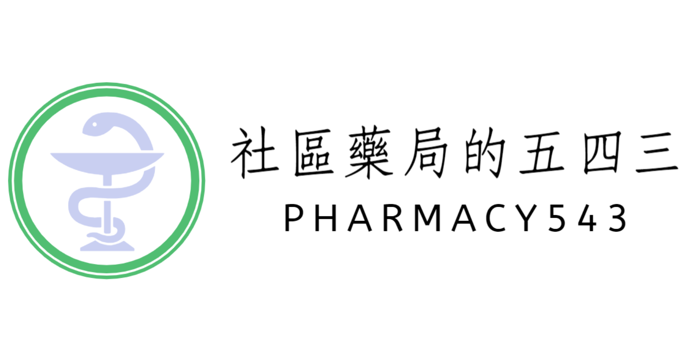

大家好，我是「社區藥局的五四三」作者，
鄭任翔藥師。
經過10年鑽研保健食品實證
以及第一線社區藥局實務銷售經驗，
我發現多數藥師真正卡住的，其實不是「不懂實證」，
而是在現場不知道該怎麼判斷、又該怎麼說。
因此，我正在規劃一套專為第一線藥師設計的「藥師決策卡」，
目的是把實證資訊轉成現場可用、能降低內耗的判斷工具。
這份3-5分鐘的問卷不涉及任何立即購買，只用來確認：
1. 哪些主題最值得優先製作
2. 什麼樣的內容深度與形式，才真的對第一線有幫助
謝謝你花時間協助我把這套工具做對方向。
涵蓋最多人選擇的 3-4 種第一線情境
每個健康主題僅提供「高勝率核心決策」
適合想先降低內耗、不追求完整覆蓋的人
每個健康主題皆包含 A-F 六大第一線情境
可同時用於櫃檯應對、進貨評估與事後判斷
適合希望「一次建好判斷框架」的藥師
你可以在FB、IG、Threads，追蹤「社區藥局的五四三」了解決策卡的最新進度
你的每一個回答，都在幫助我們做出更好的工具